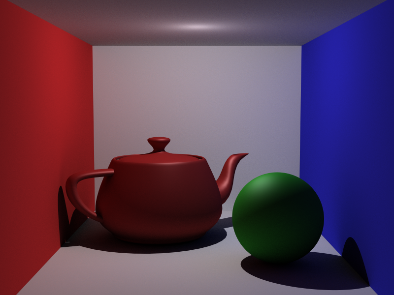
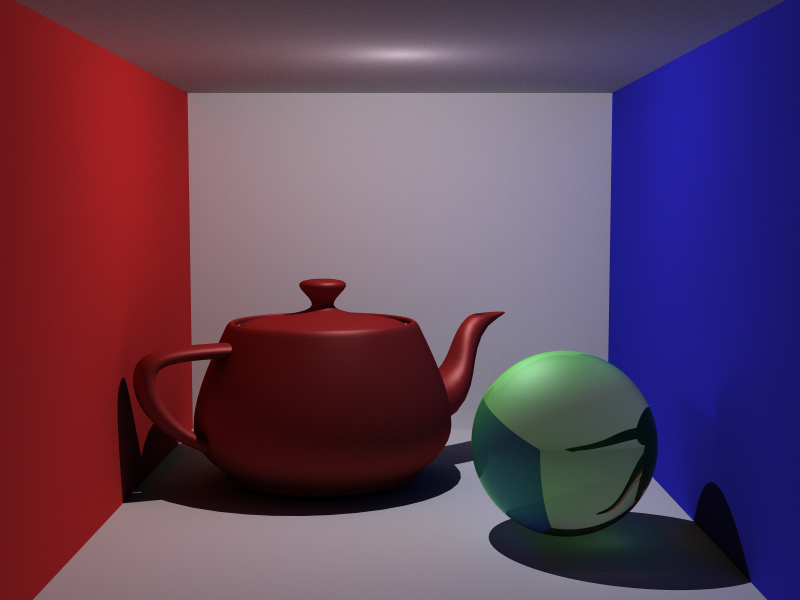
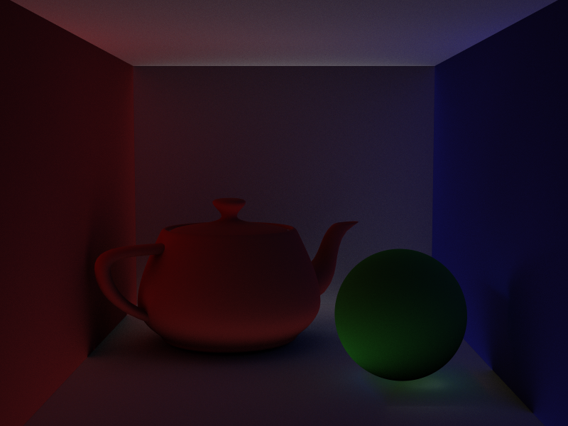
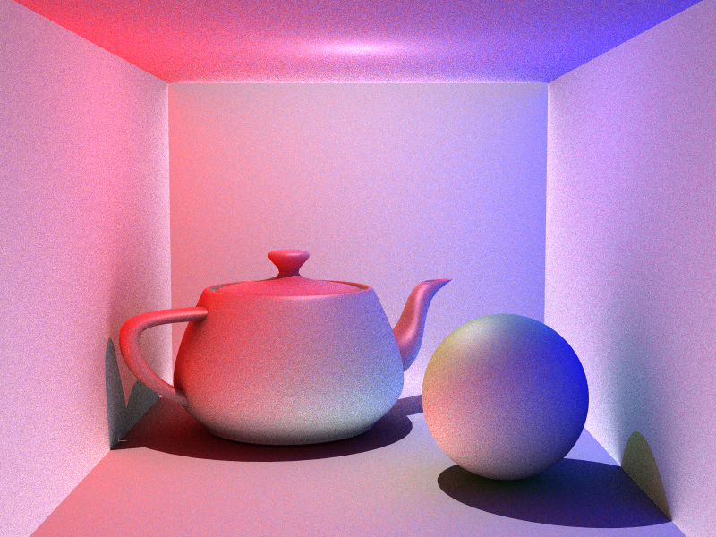

Project 11 - Monte Carlo Global Illumination
Render time: (00h 04m 45s) Min:16 Max:64 GI : 10
Render time: (00h 05m 39s) Min:16 Max:64 GI : 10
Indirect Illumination of above image
Render time: (00h 01m 39s) Min:16 Max:64 GI : 10
Buggy Image!
Hardware : Core i7 - 2630QM (2.00GH)
Ram : 6GB